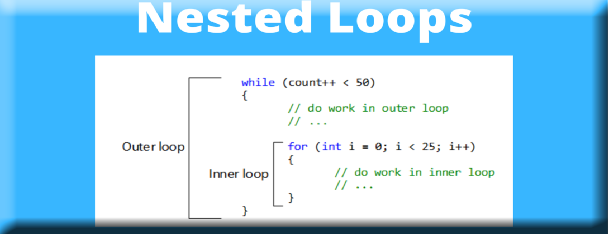

LECTURE - 03 REPETITION WHILE FOR
REPETITION WHILE FOR
while loop
while loop เป็นคำสั่งวนซ้ำที่ง่ายและพื้นฐานที่สุดในภาษา Python คำสั่ง while loop นั้นใช้ควบคุมโปรแกรมให้ทำงานบางอย่างซ้ำๆ ในขณะที่เงื่อนไขของลูปนั้นยังคงเป็นจริงอยู่ นี่เป็นรูปแบบของการใช้งานคำสั่ง while loop ในภาษา Python
i = 1
while i <= 10:
print(i, end = ', ')
i = i + 1ในตัวอย่าง โปรแกรมในการแสดงตัวเลข 1 ถึง 10 โดยการใช้คำสั่ง while loop ในตอนแรก เราได้ประกาศตัวแปร i และกำหนดค่าให้กับตัวแปรเป็น 1 หลังจากนั้นเราสร้างเงื่อนไขสำหรับ while loop เป็น i <= 10 นั่นหมายความว่าโปรแกรมจะทำงานในขณะที่ค่าในตัวแปร i ยังคงน้อยกว่าหรือเท่ากับ 10 และเราแสดงผลค่าของ i ในบล็อคของคำสั่ง while และเราเพิ่มค่าของตัวแปรขึ้นทุกครั้งหลังจากที่แสดงผลเสร็จ ถ้าหากคุณไม่เพิ่มค่าของ i ลูปจะทำงานไม่มีวันหยุดหรือเรียกว่า Infinite loop
1, 2, 3, 4, 5, 6, 7, 8, 9, 10นี่เป็นผลลัพธ์การทำงานของโปรแกรมในการแสดงตัวเลข 1 ถึง 10 โดยการใช้คำสั่งวนซ้ำ คุณจะเห็นว่าเราสามารถเขียนโปรแกรมได้ง่ายขึ้นโดยที่คุณไม่จำเป็นต้องใช้ฟังก์ชัน print() เพื่อแสดงผล 10 ครั้ง มาดูตัวอย่างการใช้งาน loop เพิ่มเติม
# decrease numbers by 5, start from 50
i = 50
while i >= 0:
print(i, end = ', ')
i = i - 5
# an empty line
print()
# print number series of 2n + 1
# where 1 <= n <= 10
n = 1
while n <= 10:
print(2 * n + 1, end = ', ')
n = n + 1ขึ้นกับว่าคุณต้องการใช้ loop ทำอะไร ต่อมาเป็นตัวอย่างของโปรแกรมในการแสดงตัวเลขตั้งแต่ 50 จนถึง 0 โดยลดค่าลงมาทีละ 5 และในลูปที่สองเป็นการแสดงลำดับของอนุกรมเลขคณิตจากสูตร 2n + 1 โดย n มีค่าตั้งแต่ 1 ถึง 10
50, 45, 40, 35, 30, 25, 20, 15, 10, 5, 0,
3, 5, 7, 9, 11, 13, 15, 17, 19, 21นี่เป็นผลลัพธ์การทำงานของโปรแกรมในการใช้ while loop แสดงค่าที่ลดลงและแสดงลำดับของอนุกรมเลขคณิต
number = []
MAX_INPUT = 10
# getting input into list
print('Enter %d numbers to the list' % MAX_INPUT)
i = 1
while i <= MAX_INPUT:
print('Number %d: ' % i, end = '')
n = int(input())
number.append(n)
i += 1
# displaying numbers from list
print('Your numbers in the list')
sum = 0
i = 1
while i <= MAX_INPUT:
print(number[i - 1], end = ', ')
sum += number[i - 1]
i += 1
print('\nSum = %d' % sum)
print('Average = %f' % (sum / MAX_INPUT))ในตัวอย่าง เป็นโปรแกรมวนอ่านค่าจากผู้ใช้โดยการใช้คำสั่ง while loop เรามีตัวแปร MAX_INPUT สำหรับกำหนดจำนวนของตัวเลขที่ต้องการอ่านค่า ซึ่งโปรแกรมแบ่งออกเป็นสอง loop คือการรับค่าและการแสดงผล
i = 1
while i <= MAX_INPUT:
print('Number %d: ' % i, end = '')
n = int(input())
number.append(n)
i += 1นี่เป็นส่วนของการรับค่า เราได้กำหนดเงื่อนไขให้กับ loop เป็น i <= MAX_INPUT เพื่อให้โปรแกรมวนรับค่าจากผู้ใช้เป็นตัวเลขจำนวน 10 ตัว หลังจากนั้นเราเก็บตัวเลขที่อ่านมาได้ลงไปใน List number โดยการใช้เมธอด append()
sum = 0
i = 1
while i <= MAX_INPUT:
print(number[i - 1], end = ', ')
sum += number[i - 1]
i += 1นี่เป็นส่วนของการแสดงผลและการหาผลรวมของตัวเลขใน List ไว้ในตัวแปร sum โดยเราใช้ตัวแปร i เป็น Index ในการเข้าถึงข้อมูลภายในลิสต์ และหลังจากนั้นเราแสดงผลรวมของตัวเลขที่รับเข้ามา และหาค่าเฉลี่ยของตัวเลขทั้งหมด
for loop
คำสั่ง for loop เป็นคำสั่งวนซ้ำที่ใช้ควบคุมการทำงานซ้ำๆ ในจำนวนรอบที่แน่นอน ในภาษา Python นั้นคำสั่ง for loop จะแตกต่างจากภาษาอื่นๆ อย่างภาษา C มันมักจะใช้สำหรับการวนอ่านค่าภายในออบเจ็ค เช่น ลิสต์หรือออบเจ็คจากฟังก์ชัน range() เป็นต้น มาดูตัวอย่างการใช้งานคำสั่ง for ในภาษา Python
# loop through string
site = 'marcuscode'
for n in site:
print(n)
# loop through list
names = ['Mateo', 'John', 'Eric', 'Mark', 'Robert']
for n in names:
print(n)
numbers = [10, 20, 30, 40, 50, 60, 70, 80]
for n in numbers:
print(n))ในตัวอย่าง เป็นการใช้คำสั่ง for loop ในการวนอ่านค่าในตัวแปร String และอ่านข้อมูลภายในลิสต์ ในลูปแรกเป็นการวนอ่านค่าตัวอักษรในตัวแปร String site โดยโปรแกรมจะวนอ่านค่าทีละตัวมาเก็บไว้ในตัวแปร n ซึ่งเป็นพารามิเตอร์ของคำสั่ง for loop และวนอ่านค่าจนครบทุกตัวอักษรและจบการทำงานของ loop และอีกในสอง loop ต่อมาเป็นการใช้คำสั่ง for loop ในการวนอ่านข้อมูลภายในลิสต์ของ String และตัวเลข
m
a
r
c
u
s
c
o
d
e
Mateo
John
Eric
Mark
Robert
10
20
30
40
50
60
70
80นี่เป็นผลลัพธ์การทำงานของโปรแกรมในการใช้คำสั่ง for loop วนอ่านค่าภายในออบเจ็ค String และ List ในภาษา Python
for loop กับฟังก์ชัน range()
ในภาษา Python เรามักจะใช้คำสั่ง for loop กับฟังก์ชัน range() ในการวนอ่านค่าออบเจ็คของตัวเลข ฟังก์ชัน range() นั้นเป็น built-in ฟังก์ชันใช้สำหรับสร้างออบเจ็คของตัวเลข โดยมีพารามิเตอร์ 3 ตัว คือตัวเลขเริ่มต้น ตัวเลขสุดท้าย และค่าที่เปลี่ยนแปลงในลำดับของตัวเลข มาดูตัวอย่างการใช้งานฟังก์ชัน range() ในภาษา Python
a = list(range(10))
b = list(range(1, 11))
c = list(range(0, 30, 5))
d = list(range(0, -10, -1))
print(a)
print(b)
print(c)
print(d)ในตัวอย่าง เป็นการสร้างออบเจ็คตัวเลขจากฟังก์ชัน range() หลังจากนั้นเราแปลงจากออบเจ็คให้เป็นลิสต์ด้วยฟังก์ชัน list() ในตัวแปร a นั้นเราใช้พารามิเตอร์เดียวคือ 10 เข้าไปในฟังก์ชัน ซึ่งเป็นการสร้างออบเจ็คของตัวเลขจาก 0 ถึง 9 (ไม่รวม 10) ในตัวแปร b นั้นใช้พารามิเตอร์สองตัวในการสร้างจาก 1 ถึง 10 (ไม่รวม 11) ต่อมาในตัวแปร c และ d เป็นการใช้งานพารามิเตอร์ครบทุกตัว โดยพารามิเตอร์ตัวสุดท้ายเป็นค่าที่เพิ่มและลดในลำดับของตัวเลข
[0, 1, 2, 3, 4, 5, 6, 7, 8, 9]
[1, 2, 3, 4, 5, 6, 7, 8, 9, 10]
[0, 5, 10, 15, 20, 25]
[0, -1, -2, -3, -4, -5, -6, -7, -8, -9]นี่เป็นผลลัพธ์การทำงานของโปรแกรมจากการสร้างออบเจ็คของตัวเลขด้วยฟังก์ชัน range() หลังจากนั้นแปลงให้เป็นลิสต์ด้วยฟังก์ชัน list()
for i in range(1, 11):
print(i, end = ', ')
print()
for i in range(10, 0, -1):
print(i, end = ', ')
print()
names = ['Mateo', 'John', 'Eric', 'Mark', 'Robert']
for i in range(len(names)):
print(names[i], end = ', ')ในตัวอย่าง เป็นการแสดงผลตัวเลข 1 ถึง 10 ด้วยการใช้คำสั่ง for loop ในการทำงานกับฟังก์ชัน range() นั้น จะเป็นการวนอ่านค่าภายในออบเจ็ค ซึ่งการอ่านค่าในออบเจ็คนั้นแตกต่างจากการอ่านค่าในลิสต์ของตัวเลข ซึ่งจะต้องใช้หน่วยความจำสำหรับตัวเลขทั้งหมด แต่ในกรณีนี้เราใช้หน่วยความจำเพียงออบเจ็คที่วนในลูปในแต่ละรอบเท่านั้น ซึ่งแน่นอนว่าประหยัดหน่วยความจำ และใน loop สุดท้ายเป็นการเข้าถึงข้อมูลภายในลิสต์ด้วย Index ของมัน
1, 2, 3, 4, 5, 6, 7, 8, 9, 10,
10, 9, 8, 7, 6, 5, 4, 3, 2, 1,
Mateo, John, Eric, Mark, Robert, นี่เป็นผลลัพธ์การทำงานของโปรแกรม ในการแสดงตัวเลข 1 ถึง 10 และในทางกลับกันแสดงจาก 10 ถึง 1 ด้วย และแสดงผลชื่อจากลิสต์
INPUT VALIDATION LOOPS
การตรวจสอบความถูกต้องของข้อมูลเข้าเป็นกระบวนการตรวจสอบข้อมูลที่มี เข้าโปรแกรมเพื่อให้แน่ใจว่าถูกต้องก่อนที่จะเป็น ใช้ในการคำนวณ การตรวจสอบความถูกต้องของอินพุตมักเสร็จสิ้น ด้วยลูปที่วนซ้ำตราบเท่าที่ตัวแปรอินพุต อ้างอิงข้อมูลที่ไม่ถูกต้อง
score=int(input(Enter a test score: '))
while score < 0 ore score > 100:
print('ERROR: The score cannot be negative')
print('or greater than 100.')
score=int(input('Enter the correct score: ')CALCULATING RUNNING TOTAL
ผลรวมคือผลรวมของตัวเลขที่สะสมด้วย การวนซ้ำแต่ละครั้งของลูป ตัวแปรที่ใช้เก็บ ผลรวมจะเรียกว่าตัวสะสม โปรแกรมคำนวณผลรวมของชุดตัวเลข โดยทั่วไปจะใช้สององค์ประกอบ: วนซ้ำที่อ่านแต่ละตัวเลขในชุด ตัวแปรที่สะสมจำนวนทั้งหมดเป็น พวกเขากำลังอ่าน
numbers=[6,5,3,8,4,2,5,4,11]
sum=0
for val in numbers:
sum+=val
print(sum)
print('The sum is',sum)6
11
14
22
26
28
33
37
48
The sum is 48นี่เป็นผลลัพธ์การทำงานของโปรแกรม ในภาษา Python
max=5
total=0.0
print('This program calculates the sum of')
print(max,'numbers you will enter.')
for counter in range(max):
number=int(input('Enter a number: '))
total=total+number
print('the to tal is',total)SENTINELS
Sentinel เป็นค่าพิเศษที่ทำเครื่องหมายจุดสิ้นสุดของลำดับของค่า เพียงถามผู้ใช้เมื่อสิ้นสุดการวนซ้ำแต่ละครั้ง หากมีค่าอื่นเป็น กระบวนการ หากลำดับของค่ายาวอย่างไรก็ตามถามคำถามนี้ที่ส่วนท้ายของ การวนซ้ำแต่ละครั้งอาจทำให้โปรแกรมยุ่งยากสำหรับผู้ใช้ ถามผู้ใช้ที่จุดเริ่มต้นของโปรแกรมว่ามีกี่รายการในลำดับ นี้ อาจทำให้ผู้ใช้ไม่สะดวก หากลำดับยาวมากและผู้ใช้ ไม่ทราบจำนวนสิ่งของที่บรรจุอยู่ ผู้ใช้จะต้องทำการนับ
check='y'
while check=='y':
item=float(input("Enter the iten wholesale cost: "))
retail_price=item*2.5
print("Retail price $", format (retail_price,",.2f"),sep='')
check=input("Do you have another item?(Enter y for yes): ")row=int(input('How many rows? '))
column=int(input('How many columns? '))
for row in range(1,row+1):
print('*', end = "")
for column in range(1,column+1):
print('*', end = "")
print()NESTED LOOPS
Nested loop Python คือ การวนลูปภายในลูปอีกทีหนึ่ง ยกตัวอย่าง มี for และภายใน for มี for loop ย่อยอีก โดย Nested loop ใช้ในการวนลูปย่อยภายในลูปใหญ่ ปกติ Nested loop จะอิงข้อมูลการวนลูปจาก for loop ใหญ่
for hours in range(24):
for minutes in range(60):
for seconds in range(60):
print(hours,':',minutes,':',seconds)continue
คำสั่ง continue ใช้สำหรับข้ามการทำงานของ loop ไปทำงานในรอบใหม่ทันทีโดยไม่สนใจคำสั่งที่เหลือหลังจากนั้น มาดูตัวอย่างการใช้งานคำสั่ง continue เพื่อแสดงผลตัวเลขคู่ในภาษา Python
for i in range(1, 11):
if i % 2 == 1:
continue
print(i, end = ', ')ในตัวอย่าง เราใช้คำสั่ง for loop ในการวนจาก 1 ถึง 10 เช่นเดียวกันกับในตัวอย่างที่แล้ว แต่สิ่งที่แตกต่างกันเราสร้างเงื่อนไขให้โปรแกรมข้ามการแสดงผลของเลขคี่ไปจากเงื่อนไข i % 2 == 1 ทำให้คำสั่งการแสดงผลถูกข้ามการทำงานไปรอบใหม่ในทันที
2, 4, 6, 8, 10break
คำสั่ง break ใช้สำหรับหยุดการทำงานของ loop ในทันทีโดยไม่จำเป็นต้องให้เงื่อนไขเป็น False ก่อน มันมักจะใช้ในกรณีที่เราต้องการสร้างเงื่อนไขให้โปรแกรมออกจาก loop ที่นอกเหนือจากเงื่อนไขของ loop มาดูตัวอย่างการใช้งานคำสั่ง break ในภาษา Python
for i in range(1, 11):
if i == 5:
break
print(i, end = ', ')ในตัวอย่าง เป็นโปรแกรมในการแสดงตัวเลขจาก 1 ถึง 10 เราได้สร้างเงื่อนไขด้วยคำสั่ง if ว่าถ้าหากค่าของตัวแปร i นั้นเท่ากับ 5 เราจะเรียกใช้คำสั่ง break นั้นหมายความว่าโปรแกรมจะออกจาก loop ในทันที ถึงแม้ว่าการวนค่าในคำสั่ง for นั้นจะยังไม่เสร็จสิ้น
1, 2, 3, 4นี่เป็นผลลัพธ์การทำงานของโปรแกรมที่แสดงเพียง 1 ถึง 4 เพราะว่าโปรแกรมเจอคำสั่ง break เมื่อค่าของ i นั้นเท่ากับ 5
PASS
สมมติว่าเรามีลูปหรือฟังก์ชันที่ยังไม่ได้ดำเนินการ
แต่เราต้องการนำไปใช้ในอนาคต พวกเขาไม่สามารถมี
ร่างกายที่ว่างเปล่า ล่ามจะบ่น เราใช้
คำสั่งpass เพื่อสร้างร่างกายที่ไม่ทำอะไรเลย
for letter in 'Anaconda Idol' :
if letter == 'a' or letter == 'k':
pass
print('Current Letter: ',letter)